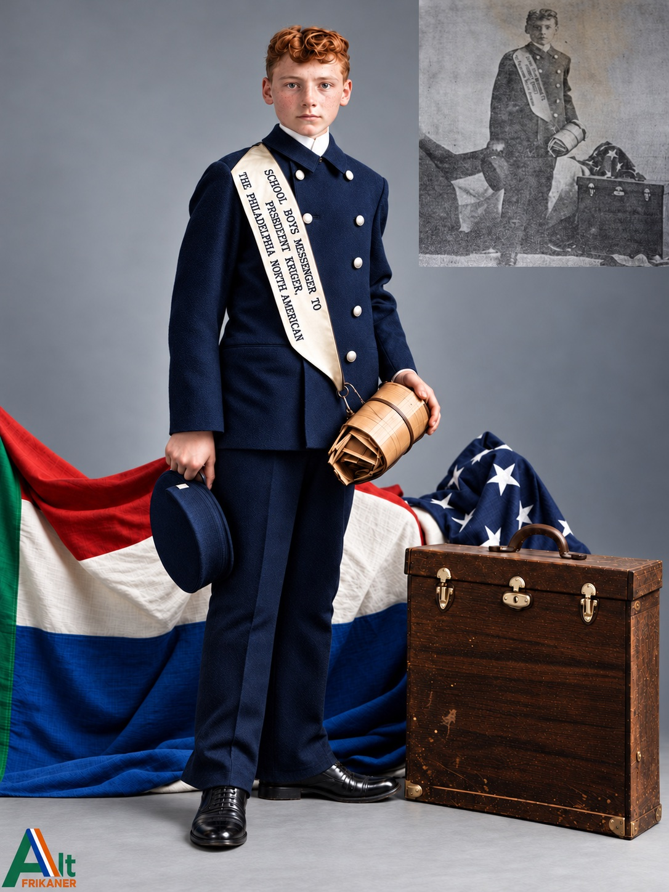
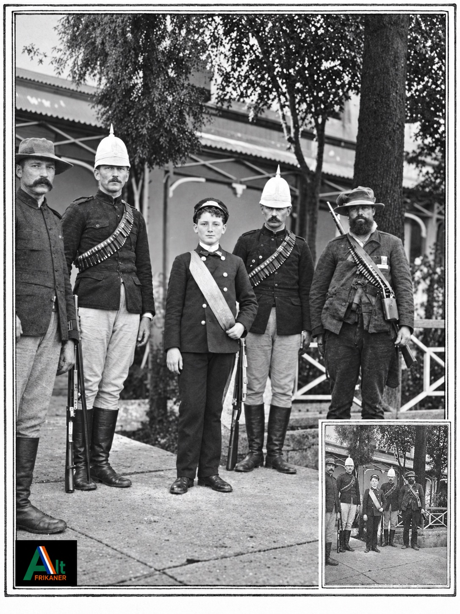

When an American schoolboy crossed an ocean
In the spring of 1900, sixteen-year-old James Francis “Jimmy” Smith of Brooklyn undertook a journey few grown men would have dared. While Britain fought the two Boer republics of southern Africa, he set out from the United States carrying the names of more than 28,000 Philadelphia schoolboys and a message of sympathy for President Paul Kruger. Their words were written in ink, their message entrusted to a teenager, and the war was advancing towards Pretoria.
Philadelphia's remarkable message
The Philadelphia North American and Evening Bulletin reported the initiative in March 1900. Edwin A. Valkenberg of the North American helped organise the appeal. Jimmy, messenger number 1534 with the American District Telegraph Company in Philadelphia, was selected from more than 1,900 messenger boys. The assignment was not merely to post a letter. He was to meet the president of the South African Republic, or Transvaal, in person.
A young messenger and a distant republic
On the departure day in Philadelphia, crowds attended a ceremony at the Academy of Music. Jimmy carried a leather messenger bag and an embroidered Transvaal Vierkleur, the four-colour flag of the republic. Journalist Hugh Sutherland accompanied him. The pair crossed the Atlantic aboard the St Louis on 9 April 1900, travelled through France and the Netherlands, met Queen Wilhelmina and the Transvaal representative W. J. Leyds, and continued by sea through the Suez Canal towards southern Africa. After reaching Lourenço Marques, now Maputo, on 25 May, they travelled by railway to Pretoria.

The meeting with President Kruger
Jimmy and Sutherland reached Pretoria on 28 May. The next day, during the final tense days before the city's occupation, President Paul Kruger stopped a war-council meeting at the Raadsaal to receive the American boy. Jimmy presented the signatures and message. According to the museum's record of Jimmy's recollection, British guns could already be heard in the distance through the open windows. Kruger thanked the schoolchildren and said their sympathy encouraged him. He left Pretoria later that day.

The names that travelled around the world
The handwritten list was more than a newspaper stunt. It linked the story of Philadelphia, where American revolutionaries had asserted independence from Britain, to the Boer republics resisting the British Empire at the start of the twentieth century. The United States government remained officially neutral, and American policy was not identical to the views of every American citizen. Yet the signatures preserve a vivid example of sympathy that reached across the Atlantic.

“It was just like the Fourth”
Then came the moment that makes Jimmy's story unforgettable. Journalist James F. J. Archibald, writing in his contemporary book Blue Shirt and Khaki, described the messenger boy staying in Pretoria as British forces closed in. On 4 June 1900, shells landed near the American consulate. Instead of keeping away, the boy reportedly ran towards the places where shells had exploded and collected pieces of artillery metal. Archibald recorded his astonishing comment: “It was just like the Fourth.” For an American boy, the noise resembled the fireworks of Independence Day. For the people of Pretoria, these were live shells in a real war.

The capture of Pretoria, and the boy who would not disappear
British forces occupied Pretoria on 5 June 1900. Jimmy walked among the arriving troops with an American flag. His mission did not make him popular with British authorities. The museum recounts that Jimmy and Sutherland were taken into custody and later released following intervention by the American consul-general. They eventually returned to New York in September 1900. From departure to homecoming, the mission covered an extraordinary distance—more than 35,000 kilometres.
What became of Jimmy?
The DITSONG Kruger Museum records that Jimmy remained briefly in telegraph work, then entered the New York Police Force. He served during the First World War in the Tank Corps and later returned to police service. He died at the age of 56. His life did not end on the day he met Kruger. But that single journey left a record preserved in a South African museum, in American press history, and in eyewitness war reporting.

What survives today
The museum's collection preserves the dispatch case, the signature pages, the presentation album and Jimmy's portrait. Together, these physical objects anchor the story in evidence rather than legend. A schoolboy carried a petition across continents, stood before an embattled president, and watched a capital fall. The most improbable detail—the collection of British artillery fragments—also appears in an independent contemporary eyewitness account. The story belongs to the shared historical memory of Americans and Afrikaners.

A story of two republics
More than 125 years later, the value of the story is not that an American boy changed the outcome of the Anglo-Boer War. He could not. It is that children in one country chose to send encouragement to people thousands of kilometres away, and one of their own travelled through a war to deliver it. From Philadelphia to Pretoria, across oceans and battle lines, Jimmy Smith made a small act of international friendship impossible to forget.
Sources & historical records
- Jan van den Bos, DITSONG: National Museum of Cultural History, “A Delivery from the States: A Messenger Boys’ Long Journey to Pretoria”. Archive collections Kr 238-1, Kr 238-2, Kr 238-4, Kr 239-1 and Kr 239-2.
- James F. J. Archibald, Blue Shirt and Khaki: A Comparison (1901), eyewitness account of Jimmy's meeting with Kruger and collection of fragments; Project Gutenberg full text, chapters IX–X.
- New York Times, May 1900, contemporary coverage of Jimmy's arrival in southern Africa, as referenced by the DITSONG catalogue.
Images credited to DITSONG: Kruger Museum; displayed by linking to original museum-hosted image files. Reproduction rights remain with the respective rights holders.